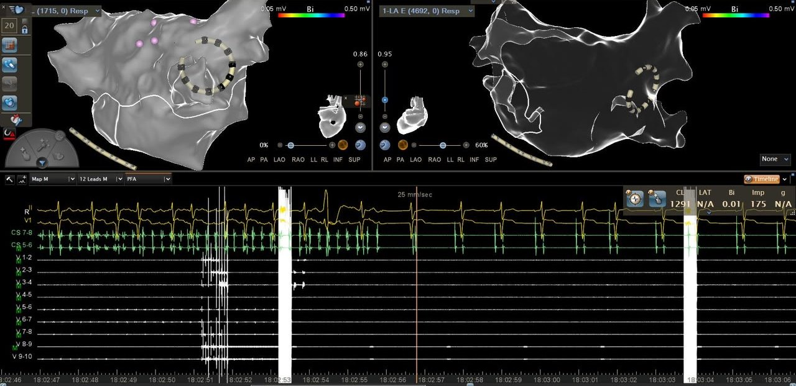

What is atrial fibrillation?
Atrial fibrillation (AF) is the most common heart rhythm problem. The upper chambers of the heart beat rapidly and irregularly, so the heart pumps less efficiently. It can cause:
- Palpitations or a racing, irregular heartbeat
- Breathlessness and tiredness
- Dizziness and reduced ability to exercise
AF increases the risk of stroke, and when it persists it can weaken the heart muscle. Most AF is triggered by abnormal electrical signals from the pulmonary veins, which is why isolating these veins is the cornerstone of AF ablation.
What is pulsed field ablation?
Pulsed field ablation (PFA) is a newer energy source for AF ablation. Instead of heating (radiofrequency) or freezing (cryoablation) the tissue, it delivers very short bursts of high-voltage electrical energy. These pulses create tiny pores in the heart muscle cells — a process called electroporation — so that the targeted tissue can no longer carry the abnormal signals.
- Tissue-selective: heart muscle is more sensitive to pulsed fields than the oesophagus, nerves and blood vessels nearby, reducing the risk of collateral injury
- Fast: each application lasts only seconds, shortening procedure time
- Effective: clinical trials have shown results comparable to conventional thermal ablation
Who is PFA suitable for?
- Paroxysmal AF — episodes that come and go — when symptoms continue despite medicines, or as an early treatment
- Persistent AF, particularly when treated early
- AF in patients with a weakened heart (reduced ejection fraction), where restoring rhythm can improve heart function
- Patients who prefer not to take long-term rhythm-control medicines
Suitability is decided after an ECG, Holter monitoring, echocardiogram and, when needed, a CT scan of the left atrium.
How the procedure is done
PFA is usually performed under deep sedation or general anaesthesia. Catheters are passed through a vein in the groin and across the thin wall between the upper chambers into the left atrium. The PFA catheter is positioned at each pulmonary vein and energy is delivered in a few seconds per application. In persistent AF, additional areas such as the posterior wall of the left atrium may be treated.
Combining PFA with 3D electroanatomic mapping lets every application be tracked on a model of the heart and isolation be confirmed with a voltage map before the procedure ends. The procedure typically takes one to two hours.
Case example: AF terminating during PFA
A middle-aged man with early persistent atrial fibrillation and moderate left ventricular dysfunction underwent 3D-mapping guided pulsed field ablation. His atrial fibrillation terminated to normal sinus rhythm on the table during ablation.

See the full case with the lesion set and voltage maps on the cases page.
Recovery after PFA
Most patients go home the next day, return to light activity within a few days and avoid heavy lifting for about a week. Blood thinners are continued for at least two to three months, and longer depending on stroke risk. Brief episodes of irregular rhythm in the first three months can occur while the heart heals and do not necessarily mean the procedure has failed.
Possible risks
AF ablation is a well-established procedure, but like any heart procedure it has risks — bleeding at the groin, fluid collecting around the heart, and rarely stroke. Your individual risks will be discussed before the procedure.
Why consult Dr. Chinmay Parale?
- Post-doctoral fellowship in cardiac electrophysiology at Deenanath Mangeshkar Hospital, Pune
- Performs 3D-mapping guided AF ablation with pulsed field and radiofrequency energy — see the case examples
- Research on machine-learning prediction of atrial fibrillation from ECGs, published in the Journal of Practice of Cardiovascular Sciences
- Consultant Cardiologist & Electrophysiologist, Deenanath Mangeshkar Hospital, Pune
- Former Assistant Professor of Cardiology, AIIMS New Delhi
- Cleveland Clinic Global Scholar Award, American College of Cardiology (2026–2027)
Where to consult in Solapur & Pune
Solapur
Spandan Cardiac Diagnostic and Research Centre
Modi Khana, Solapur
Ashwini Cooperative Hospital
Solapur
Appointments: +91 73850 67059 / 0217 231 3979
Pune
Deenanath Mangeshkar Hospital
Erandwane, Pune · OPD every Friday, 3–5 pm
Appointments: 020 4915 3278
Frequently asked questions
What is pulsed field ablation (PFA)?
Pulsed field ablation is a newer way of performing atrial fibrillation ablation. Instead of heat or freezing, it uses very short, high-voltage electrical pulses that create tiny pores in heart muscle cells, so that the tissue causing AF can no longer conduct abnormal signals.
Is PFA better than radiofrequency ablation for atrial fibrillation?
In clinical trials, PFA has been as effective as conventional thermal ablation for atrial fibrillation, with shorter procedure times. Because heart muscle is more sensitive to pulsed fields than surrounding structures, PFA lowers the risk of injury to the oesophagus and the phrenic nerve. The best technique depends on the individual patient and is discussed at consultation.
Can AF ablation help if my heart is weak?
Yes, in suitable patients. Atrial fibrillation can itself weaken the heart, and restoring normal rhythm with ablation can improve heart function, symptoms and outcomes in selected patients with a reduced ejection fraction.
How long does PFA take and when can I go home?
The procedure usually takes one to two hours under deep sedation or general anaesthesia. Most patients go home the next day and return to light activity within a few days.
Is pulsed field ablation available in Solapur and Pune?
Dr. Chinmay Parale evaluates patients with atrial fibrillation for pulsed field ablation in Solapur and Pune. For appointments in Solapur call +91 73850 67059 or 0217 231 3979; in Pune, Dr. Parale's OPD at Deenanath Mangeshkar Hospital is every Friday, 3–5 pm (call 020 4915 3278).
Related treatments
This page is general information for patients and families and does not replace a medical consultation. Whether a procedure is right for you depends on an individual assessment. Written by Dr. Chinmay Parale, MD, DM. Last updated November 2026.